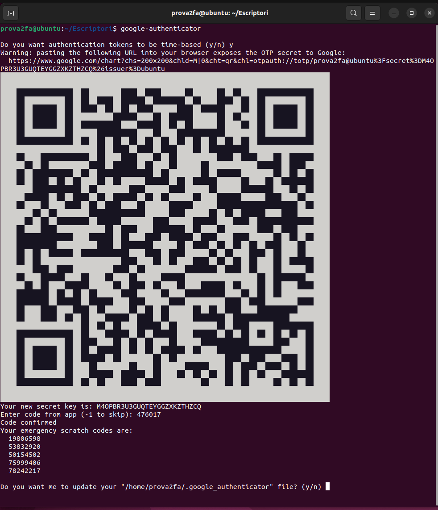

2FA SSH
Dobre factor d'autenticació
Habilitar autenticació de dos factors (2FA) per SSH afegeix una capa addicional de seguretat en els teus accessos al servidor. En aquesta activitat pràctica, implementarem Google Authenticator per a la segona fase d'autenticació, utilitzant un dispositiu mòbil per generar codis d'un sol ús.
Activitat pràctica: Habilitar 2FA per SSH amb Google Authenticator
Objectiu:
Configurar l'autenticació de dos factors (2FA) en un servidor Linux amb SSH utilitzant Google Authenticator com a generador de codis.
Requisits previs:
- Un servidor Linux amb accés a SSH (Ubuntu, Debian, CentOS, etc.).
- Accés com a superusuari (
root) o permisos desudoper fer canvis de configuració. - Un dispositiu mòbil amb l'app Google Authenticator (o qualsevol app que suporti TOTP, com Authy). `
Possibles problemes en Fedora
Utilitzeu preferiblement Ubuntu o similar. En distros com Fedora poden apareixer problemes derivats del SELinux que impedeix que s'execute correctament SSH o Google Autenthicator o també problemes derivats de la sincronització del temps que requereixen accions de configuració molt costoses per a poder realitzar la pràctica.
Passos de l'activitat:
1. Instal·lació de Google Authenticator
Ubuntu/Debian:
- Instal·la el paquet de PAM (Pluggable Authentication Module) per a Google Authenticator:
CentOS/RHEL:
- Instal·la el mateix paquet amb:
2. Configuració de Google Authenticator per usuari
Cada usuari que vulgui accedir amb 2FA haurà de configurar el seu propi autenticador.
- Comença per generar la clau secreta de Google Authenticator per a l'usuari (executant aquesta comanda amb cada usuari al qual vulguis habilitar el 2FA):
Bash

- L'usuari haurà de seguir els passos següents:
- Es generarà un codi QR que es pot escanejar amb l'app de Google Authenticator al mòbil.
- També es proporcionaran codis de recuperació que hauràs de guardar en un lloc segur.
- Respon a les següents preguntes:
- Vols que els codis siguin d'un sol ús? (respon y).
- Fixar una finestra de temps addicional? (respon n, per defecte és suficient).
- Vols prevenir més d’un ús d’un codi? (respon y, per seguretat).
- Vols habilitar el limitador de freqüència? (respon y, per prevenir intents repetits).
3. Configurar PAM per utilitzar 2FA
Ara has de modificar els fitxers de configuració de PAM i SSH perquè l'autenticació de dos factors funcioni correctament.
-
Edita el fitxer de configuració PAM de SSH:
Bash -
Afegeix la següent línia al principi del fitxer:
Bash
Això indica a PAM que utilitzi el mòdul de Google Authenticator per validar els usuaris.
4. Configurar SSH per acceptar 2FA
-
Edita el fitxer de configuració de sshd:
Bash -
Busca les línies següents i assegura't que estiguen habilitades o escriu-les:
-
Si estàs utilitzant l'autenticació per clau pública i vols combinar-la amb 2FA, assegura't que aquesta línia també estigui habilitada:
Bash -
Deshabilita PasswordAuthentication si només vols utilitzar autenticació per clau pública + 2FA, cosa que augmenta la seguretat:
Bash -
Guarda i tanca el fitxer.
5. Reiniciar el servei SSH
Després de configurar el PAM i SSH, reinicia el servei SSH perquè els canvis tinguin efecte:
| Bash | |
|---|---|
6. Prova de connexió amb 2FA
Ara prova d'accedir al servidor per SSH des d'un altre client. Quan t'introdueixis amb el teu usuari, se't demanarà primer la teva clau (si fas servir autenticació per clau pública) o la contrasenya (si està habilitada), i després se't sol·licitarà el codi de verificació generat per Google Authenticator:
| Bash | |
|---|---|
Si la configuració és correcta, veuràs alguna cosa així:
| Text Only | |
|---|---|
Has d'introduir el codi generat per la teva app de Google Authenticator.
Firewall
Si teniu problemes per a connectar-vos per SSH comproveu el Firewall!!!
Pots indicar al Firewall que permeta les connexions SSH així:
| Bash | |
|---|---|